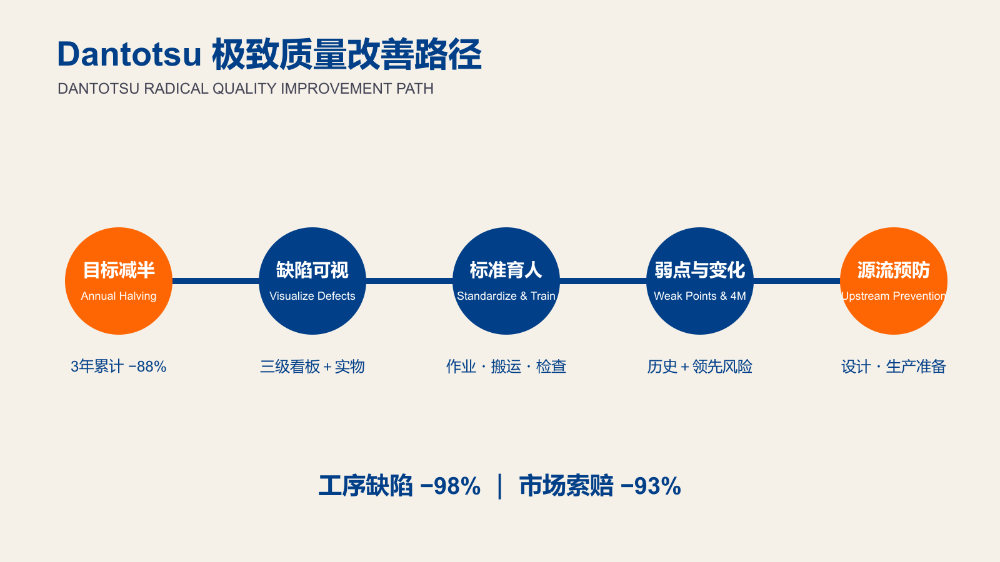

费老师拆书系列 · 第 5 本《丰田式 Dantotsu 质量改善》。把一本书读厚，再拆薄。 这一本，专治“质量第一喊得很响，缺陷曲线却没怎么动”。
为什么翻开它
先说个费老师在中小企业最常见的场面。
大事故是少了，客户投诉偶尔来一次，月报上每个问题都有责任部门，分析也都在做。可缺陷曲线就是不动。于是管理层再强调一遍“质量第一”，质量部门再换一张更复杂的表格，下个月照旧。
老板心里其实有个说不出口的判断：要真想把质量做上去，得花钱——上系统、买设备、招个质量总监。可钱在哪儿呢？于是这事就一直拖着。
费老师翻开这本书，最先想跟中小企业老板说的，恰恰是相反的那句：这套东西几乎不花钱。
书里那些让人挪不开眼的数字——在制缺陷下降 98%、市场索赔下降 93%——背后的动作朴素到有点寒酸：车间里放一个刷了红漆的箱子，缺陷当天扔进去；墙上挂一块板，数据更新到昨天；班前会多问一句“今天有什么不一样”。
没有一件需要立项。
Sadao Nomura 这本书说：别再加口号了。先看你的目标有没有坡度，缺陷有没有实物，历史有没有留下，变化点有没有人在当天确认。
他给出的不是一张“质量工具大全”，而是一条推进顺序：先把工厂和供应商缺陷压下去，再追市场索赔，最后进入新车型设计与生产准备。每走到下一段，都不是因为上一段失败，而是因为上一段做出结果以后，更上游的问题终于露了出来。
这条路在 Toyota Logistics & Forklift（丰田物流与叉车，简称 TL&F）走了近十年。最后，高滨工厂成车检验缺陷下降 98%，6 家海外工厂分别做到 91%—98% 的缺陷下降；市场端最好的 Company F 把索赔费用下降 93%，整个集团索赔支付下降 65%。
如果只摘这几个数字，这本书很容易被读成又一个“丰田神话”——看完感叹一句“人家是丰田”，然后关掉。
费老师想拦一下这个反应。这些结果不是丰田的资源换来的，是丰田的耐心换来的。 数字背后那套动作近乎笨拙：立一块板、留一个实物、每天开一次短会、每逢变化就确认、每次复发都把旧历史翻出来。
论资源，这几件事三十人的小厂比三千人的大厂更容易做——你的班组长就在眼前，你的缺陷实物走不出五十米，你今天定的规矩明天就能落地。大厂做这套要跨八个部门，小厂只要老板点个头。
真正的门槛不在钱，在“每天都做”。这也是为什么它花了近十年。
读厚：溯到源头
“Dantotsu”不是一个标准质量术语，而是日语口语，接近“压倒性、极致、激进”。它的根扎在自働化（Jidoka）：机器与技术应替人工作，问题发生时就停下来，不让缺陷流到下一站，更不等客户替你检验。
Nomura 在 Toyota Motor Corporation 工作四十多年，做过制造、质量保证、供应商支援和全球运营。他的方法并不是从会议室里长出来的。导读里最关键的一句，是这条路“可复制，但只在勤奋与坚持之下可复制”。
The Raymond Corporation 的前言把这种坚持换成了数字：每台缺陷从 2006 年 1.23 降到 2019 年 11 月 0.0036；同一制造面积里，出货从 2008 年 4,000 台升到 2019 年 22,000 台；员工从 2007 年起累计提出超过 100,000 条改善建议。
所以，Dantotsu 不是一次质量月。它是十几年里，每天都有人把异常当真。
书里还有一个很有意思的对照。Raymond 不只把质量做上去，同一制造面积内的出货也从 4,000 台提高到 22,000 台。这意味着，极致质量并不是用更多检验、更多返工和更多场地换来的。恰恰相反，缺陷减少以后，原本花在修理、搬运、等待和占地上的资源被释放出来，生产率才有机会真正上升。
Michael Field 总结的顺序只有一句：先优化，再自动化。 在流程还不稳定、缺陷还看不见的时候上自动化，只会让问题发生得更快，也更难追。
拆开：挑三个亮点
亮点一：零缺陷不是口号，而是一条连续减半的坡
书里第一阶段的目标非常不“温和”：工厂和供应商缺陷，每年减半，连续 3 年，累计 -88%。市场索赔因为反馈与处理周期更长，先定 3 年 -50%。
这张目标曲线的厉害之处，是它会逼你承认原来的做法不够。如果今年只是“再努力一点”，数学上根本到不了明年的一半。要过线，就必须改变发现问题的速度、对策的颗粒度和管理节奏。
高滨工厂后来把活动再延长 3 年，形成“每年减半 × 6 年”的长坡。到 2010 年，成车检验每台缺陷最终下降 98%，几乎所有下线车辆都能不经返修直接交付。更值得注意的是，海外工厂没有因为文化、语言和习惯不同就被排除在外：6 家海外工厂也实现 91%—98% 的缺陷下降。
这给目标管理一个很实用的提醒：目标不是年底考核时才拿出来的数字，而是用来倒逼“今年必须改变哪些管理动作”的装置。如果每年目标都能靠加班、筛选和末端检验完成，那就不叫质量改善，只是把损失换了一个地方记账。
亮点二：不要只看缺陷数，要保留缺陷的身体和历史
在制缺陷用红笔标出位置，挂上日期、原因、姓名等标签，立即放进红箱。班组长每天分类、记录，然后回到实际作业处观察。缺陷不再只是月报上的一根柱，而是一个能拿在手里、能指出痕迹、能和操作员对话的实物。
这里的动作顺序很重要：缺陷部位先用红笔标出来，再挂上零件号、名称、发现人和缺陷内容等信息，立即放进红箱。班组长不是月底汇总，而是每天把红箱里的实物分类，按类型记录数量；当天结束前，再把实物送到缺陷可视化区域。同时，他要回到相关工序，看操作者当时到底怎么做，而不是在会议室里猜原因。
数字能告诉你哪个问题多，实物才能告诉你缺陷长什么样、发生在什么位置、有没有加工痕迹。很多企业的质量会议只有柱状图，没有缺陷实物；大家围着一串代码分析半小时，最后得到的往往是“加强培训、提高意识”。Nomura 反过来：先站到实物和现场面前，再决定该教什么、该改什么。
慢性问题则进入弱点管理（Weak-Point Management，WPM）。塑料板把同一位置过去发生过什么、做过什么对策、有没有再发，都留在现场。组织终于不会每次复发都装作第一次遇见。
弱点管理最适合那些“修过很多次、每次都说解决了”的问题。它不允许旧记录被一张新的问题单覆盖，而是把同一设备、同一部位、同一工序的现象、对策和复发连续挂在一起。这样，再发生时首先问的不是“这次谁负责”，而是“上一次为什么没有真正消掉机制”。
亮点三：质量改善要一路往上游走
第一阶段压制造缺陷，第二阶段用索赔晨会压市场索赔，后面继续进入新车型设计和生产准备。书里说，约 70% 的缺陷过去已经发生过。真正的第一任务，不是发明更聪明的分析，而是彻底阻止旧缺陷换个时间、换个车型再回来。
这也是费老师最喜欢这本书的地方：它不把“设计质量”当一个宏大主题，而是从一件件已经付过学费的缺陷倒推，问新产品准备时有没有把这笔学费带进去。
中间还有一个很关键的桥梁：索赔晨会（Claim Asaichi）。2011 年，团队开始把客户退回实物拉到固定的高频会议上。与会者面对的不是一页汇报，而是客户实际遇到的东西：实物是否回来、现象是否确认、哪个环节制造出来、哪个环节放了出去、临时措施有没有覆盖在途品、永久对策什么时候验证。
Company F 最后把原本认为不可实现的索赔费用目标做到 -93%；Company D 和 Company E 分别接近 -78% 与 -80%。索赔晨会的价值不在“早上开会”，而在于把客户、实物、责任和期限重新接回同一条信息流。
再往上走，书里给出一个让人警醒的数据：约 70% 的缺陷过去已经发生过。换句话说，大量“新车型问题”并不新，只是旧学费没有进入设计评审、工艺准备和供应商确认。所谓源流质量，就是让过去的问题在量产前再次被看见。
拆薄：搬进车间
把全书压成一条线，就是：目标有坡度，异常有实物，现场有历史，变化有人盯，问题向上游追。
先在工厂中央放一块质量管理板。左边看超过 5 年的长期趋势，中间看当月部门和车型，右边挂最新缺陷与对策。再给班组一个红箱，当天缺陷当天关。班前会先问人、机、料、法今天有什么变化，夕会再问未达成原因有没有被派给具体的人。
等制造端稳定，再把市场退回件拉进索赔晨会。Company F 最后做到索赔费用 -93%，整个集团下降 65%。到这一步，质量部门不再是报告的终点，而是信息回到设计、工艺、供应商和现场的交通枢纽。
书里的壳体线案例，把“稳定”讲得特别具体。新线启动时，团队把每一次停机写上生产管理板，通过夕会讨论原因，再由任务小组集中关闭问题。到第 5 周，每班总停机降到 10 分钟，可动率达到 98%。小问题还会有，但重大设备问题已经很少发生。
这跟质量有什么关系？一条经常停、经常赶、经常临时换人的线，会不断制造新的变化点。现场为了追回产量，最容易省掉首件确认、检查和标准动作。生产稳定不是质量之外的效率课题，它正是质量能够守住的地基。
把全书压成四套现场工具
| 工具 | 解决什么问题 | 最少要有的字段 | 使用节奏 |
|---|---|---|---|
| 质量管理板 | 质量数据藏在电脑里，现场看不出哪里正在恶化 | 超过 5 年的长期趋势、当期部门分解、最新缺陷、责任人、期限、验证结果 | 至少更新到前一日，管理者到板前追差距 |
| 8 步复发防止表 | 找到发生原因，却没追为什么流出去 | 事实确认、临时阻断、发生原因、流出原因、永久对策、验证、横展、标准与教育更新 | 每个重大或复发缺陷一张，关完才结案 |
| 4M 变化点表 | 新人、换料、调机、改方法后，风险没人提前管 | 人、机、料、法变化；事前准备；首件确认；确认人；异常处置；结束确认 | 班前点变化，记录保留 1 年 |
| 索赔晨会表 | 客户问题在邮件和部门间慢慢失真 | 退回实物、市场现象、发生部门、流出部门、临时措施、永久对策、横展 | 固定高频复盘，未关闭事项持续滚动 |
这四套工具已经做成空白版和示例版。它们并不是四张彼此独立的表：质量管理板负责暴露差距，8 步表负责关闭复发，4M 表负责提前看风险，索赔晨会负责把最远端的客户信息拉回现场。
一条缺陷，应该怎样在系统里走
假设班组今天发现一个装配缺件。第一步不是录入系统，而是把实物留下、标出缺陷、放进红箱；班组长当天回现场确认。若发现当天有新人替岗或材料批次变化，就去查 4M 变化点记录。若问题过去发生过，则打开弱点历史，看旧对策为什么没有守住。若已经流到客户，则进入索赔晨会，并用 8 步程序同时追发生原因和流出原因。最后，把有效对策更新到作业标准、检查标准和教育记录，并横展到相似产品。
走完这条链，问题才算真正关闭。只完成其中某一张表，只能算“留下了记录”。

核心结果本月就能动手：给企业的 5 点实战建议
- 把一个质量指标改成连续三年的坡度。 本周选一个数据最可信、实物最容易保留的缺陷类别，填进质量管理板：基准是多少、今年到哪里、三年后到哪里、哪个部门负责。随后倒推：要实现每年减半，今年必须新增哪一个现场动作。坑：只有百分比没有基准值，任何人都无法核对。
- 设一个红箱，并规定每天的关闭时点。 准备红笔、标签和固定容器，标签至少写日期、零件、缺陷位置、发现人。班组长下班前完成分类、数量记录和现场确认。铁律：红箱不是废品箱，更不是临时仓库；实物跨天没人看，就失去了发生时的上下文。
- 在班前会增加“今天有什么不同”。 按人、机、料、法逐项点变化：谁第一次上岗、哪台设备刚维修、哪批材料刚切换、哪个作业方法刚更新。每一个变化都明确首件确认人和异常处置。坑：不要让质量部门下午补签，变化点必须在生产开始前被看见。
- 给一个慢性问题建立历史板。 只选一个反复发生的问题，把过去的现象、发生日期、临时措施、永久对策和复发情况放到同一块板上。下次再发，先复盘旧对策的机制缺口。铁律：每次另开新单，会让组织持续失忆。
- 每周做一次发生原因与流出原因的双追问。 从本周最严重的一件缺陷开始：为什么制造出来，为什么现有控制没有拦住。对策验证后，列出相似产品、设备和供应商，逐一横展，并同步作业标准、检查标准与培训记录。坑：只改发生点，不改检出与阻断机制，缺陷仍会走到客户手里。
先后顺序：第一个月先做目标坡度、红箱和变化点；跑顺 4 周后，再上弱点历史板与双原因横展。别五件一起铺开，节奏比声势重要。
递给你
读完这本书，费老师最想递给你的不是 98% 那张漂亮成绩单，而是一个不太舒服的问题：
你们上个月的缺陷，现在还能不能找到实物、找到当时的变化、找到做过的对策，也找到它后来有没有再发生？
如果答案只能在几个 Excel 和几封邮件里拼出来，那问题不只是“数据分散”——是组织还没长出质量记忆。
老规矩，把这本书拆出来的东西，收成一张能贴墙上的单子：
- 别再加口号，先给目标一个坡度：连续三年每年减半，数学上就逼着你改管理动作，靠加班和末端筛选达不到；
- 缺陷要留身体，不能只留数字：红笔标位置、挂标签、进红箱，当天分类当天回现场看——柱状图告诉你哪类多，实物才告诉你它长什么样；
- 红箱不是废品箱：实物跨天没人看，就丢了发生时的上下文；
- 给慢性问题建一块历史板：同一部位过去发生过什么、做过什么对策、有没有再发，全挂在现场——每次另开新单，组织就会持续失忆；
- 班前会多问一句“今天有什么不一样”：人、机、料、法逐项点，每个变化都指定首件确认人；
- 双追问，缺一不可：为什么制造出来（发生原因）＋ 为什么没被拦住（流出原因）；只改前者，缺陷照样走到客户手里；
- 约 70% 的缺陷过去已经发生过：所谓源流质量，就是让旧学费在量产前再被看见一次；
- 先优化，再自动化：流程还不稳、缺陷还看不见就上自动化，只会让问题发生得更快、更难追；
- 质量的地基是生产稳定：一条经常停、经常赶、经常临时换人的线，会不停制造新的变化点；
- 门槛不在钱，在每天都做——这也是它为什么花了近十年。
做工厂的、带团队的、管质量的，都可借鉴哈。
书中那些醒目的结果——98%、93%、65%——最终都落在极小的管理动作上。今天的实物有没有留下？昨日的数据有没有更新？变化发生前有没有确认？承诺到期后有没有追？旧问题再发生时，有没有翻出上次的学费？
质量体系真正的差距，往往不在缺少某个高级方法，而在这些基本动作之间存在断点。 Dantotsu 的“激进”，恰恰来自对基本动作长期、不打折扣的坚持。
📚 费老师拆书 · 已拆 5 / 首季 12 本
✅ 欢迎问题，收获成功 ✅ 丰田参与方程式 ✅ 创建精益文化 ✅ 日常管理 ✅ 丰田式 Dantotsu 质量改善
想要文中《质量管理板》《8 步复发防止》《4M 变化点》《索赔晨会》四套表单的朋友，公众号后台回复「红箱」，费老师发你——空白版和示例版都有，字段都预设好了，打印出来就能往车间墙上贴。
质量不是检出来的，也不是喊出来的。它是每一次异常都被看见、被留下、被追到上游之后，慢慢长出来的。
流水不腐，改善不止。我们下期再会。
—— 流动智造（FLOWSMART）× 流易数智（EASYFLOW） 费老师

相关术语：断突质量 · 零缺陷 · 自働化 · 持续改善 · 晨会 · 全质量零缺陷 · 防错
本系列：← 第004本 · 全部笔记 · 拆书台账 · 第006本 →
彩蛋：正篇讲方法，案例留给了彩蛋篇 → 第005本案例集